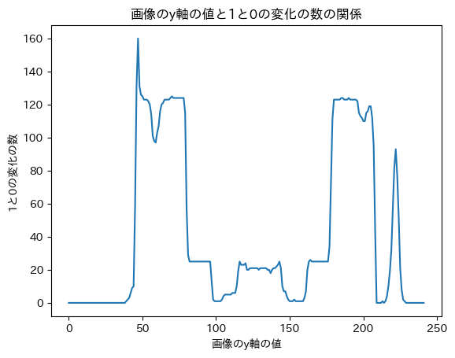

def show_img(path):
plt.imshow(mpimg.imread(path),cmap="gray")api
APIのページです。
Ruler
Ruler (path, tmp_dir='tmp', isHorizontal=True)
Initialize self. See help(type(self)) for accurate signature.
# path = "data/612110.jpeg"
# path = "data/IiReU.jpeg"
# path = "data/0e067eb07d7b435ce8b1074513efd41a.jpeg"
# path = "data/simple.jpeg"
# path = "data/ndl.png"
path = "data/hi.png"
# path = "rotated.jpg"
# path = "data/hi2.png"
# path = "data/hi3.png"
ins = Ruler(path)
plt.imshow(mpimg.imread(path),cmap="gray")<matplotlib.image.AxesImage at 0x7f7c80c1bc50>傾き補正
Ruler.rotate
Ruler.rotate (input_path, output_path)
rotate_path = "tmp/rotate.jpg"
Ruler.rotate(path, rotate_path)
show_img(rotate_path)平滑か
blur_path = "tmp/blur.jpg"
Ruler.blur(rotate_path, blur_path)
show_img(blur_path)二値化
Ruler.ad_s
Ruler.ad_s (input_path, output_path)
adaptiveThreshold
otsu_path = "tmp/otsu.jpg"
Ruler.ad_s(blur_path, otsu_path)
show_img(otsu_path)細線化
Ruler.skelton_s
Ruler.skelton_s (input_path, output_path, reverse=False, basic=True)
saisen_path = "tmp/saisen.jpg"
Ruler.skelton_s(otsu_path, saisen_path)
show_img(saisen_path)変化がもっとも多いy軸の値を取得する
Ruler.get_line
Ruler.get_line (path)
x_index, x_values, y_values = Ruler.get_line(saisen_path)
Ruler.show_xy(x_values, y_values, title="画像のy軸の値と1と0の変化の数の関係", xlabel="画像のy軸の値", ylabel="1と0の変化の数")
横線をひく
Ruler.write_line
Ruler.write_line (path, output_path, i, isHorizontal=True)
line_path = "tmp/line.jpg"
Ruler.write_line(saisen_path, line_path, x_index)
show_img(line_path)Ruler.save_row_img
Ruler.save_row_img (path, output_path, i, isHorizontal=True)
row_path = "tmp/row.jpg"
Ruler.save_row_img(saisen_path, row_path, x_index)
# show_img(row_path)行画像から間隔を取得する
Ruler.get_ws
Ruler.get_ws (path)
freq, ws = Ruler.get_ws(row_path)x_values, y_values = Ruler.show_freq(freq)Ruler.show_xy(x_values, y_values, title="点の間隔と頻度の関係", xlabel="点の間隔", ylabel="頻度")Ruler.get_pixel_per_mm
Ruler.get_pixel_per_mm (ws)
pixelPerMM = Ruler.get_pixel_per_mm(ws)
print("pixelPerMM", pixelPerMM)pixelPerMM 12## 結果を表示Ruler.write_lines
Ruler.write_lines (path, output_path, pixelPerMM)
result_path = "tmp/result.jpg"
Ruler.write_lines(rotate_path, result_path, pixelPerMM)
show_img(result_path)